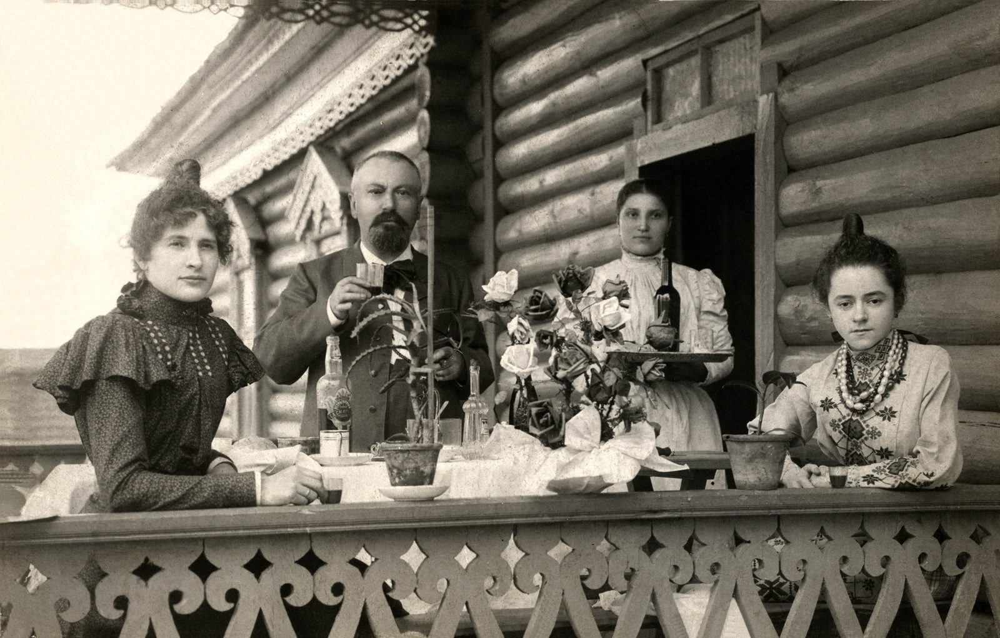
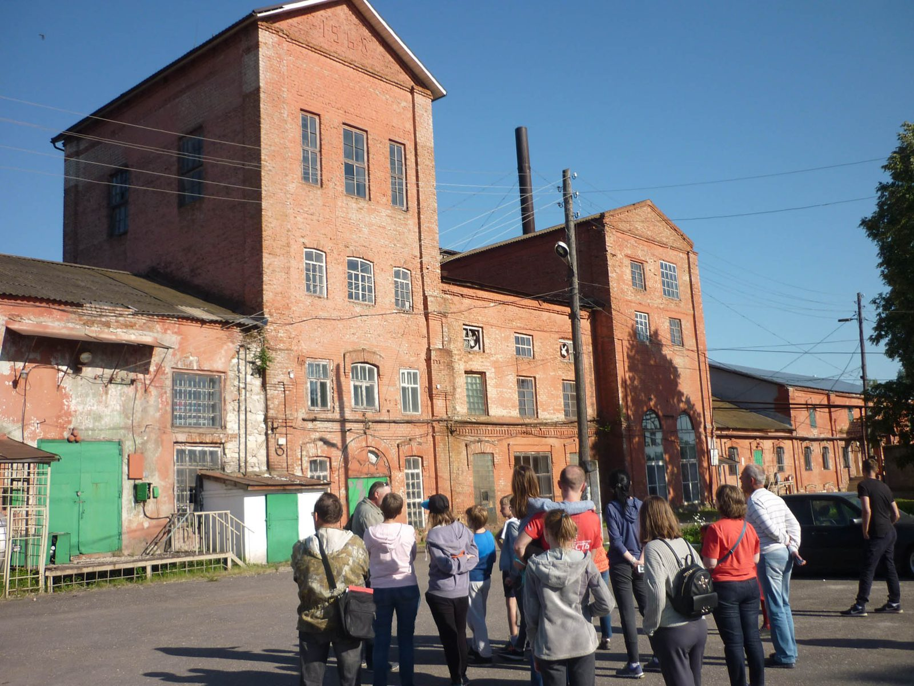

Вам уже есть 18 лет?
Сайт производителя пива, медовухи и сидра содержит информацию об алкогольной продукции.
Сайт производителя пива, медовухи и сидра содержит информацию об алкогольной продукции.
Пивоварня в Мещере, в историческом здании винокуренного завода. Здесь варят по традициям европейских школ, водят экскурсии и собирают музей.
Село Городковичи и соседний Лакаш получили толчок к развитию при Фёдоре Андреевиче Беклемишеве и его дочери Елизавете Фёдоровне: при них были построены стекольный и винокуренный заводы. Винокуренный завод возвели в 1911 году по проекту известного немецкого инженера и предпринимателя Франца Круля.
Лакашинские бондари славились мастерством по всей России. Исторические фотографии усадьбы и бондарей нашли у жителей села в 2020 году — теперь они в музее пивоварни.
В 2021 году заводу исполнилось 110 лет: глава Спасского района вручил благодарственное письмо директору завода Владимиру Моторжину.




По новостям старых сайтов 2015–2021. Даты основания самой пивоварни и запуска линейки Alter Brauch — уточнить.

Основа производства — вода из собственной артезианской скважины, элитный солод и хмель, традиционная рецептура и современное оборудование. Соседство с Окским заповедником делает производство максимально экологичным.
Пиво не фильтруется и не пастеризуется, консерванты не используются. Солод — семейной солодовни Weyermann®, оборудование — немецкой KHS AG. Минимальный срок изготовления — 28 суток.
XIX Международный профессиональный конкурс ВНИИ пивоваренной, безалкогольной и винодельческой промышленности — сорт Classic European Lager, более 50 конкурентов.
2016, 2017, 2018 — дизайн‑завод «Флакон», Москва. «рЯзмарин» получил самые высокие оценки дегустаторов и гостей; в 2018 году гости возвращались к кранам за Milk Stout и Kriek Lambic.
2016 и 2017 — фестиваль малых российских пивоварен в Гостином дворе, Москва. Среди 100–150 пивоварен страны.


С 2018 года на пивоварне проходят экскурсии с дегустацией: история здания и местности, технология, цех, музей, дегустация сортов, для детей — лимонад собственного производства. Магазин при заводе работает ежедневно с 10 до 20.
Удобный маршрут выходного дня: Рязань — Старая Рязань — Ижевское (родина Циолковского) — Городковичи — Окский заповедник с журавлиным питомником.
проводятся ли экскурсии сейчас, расписание, цена, как записаться (телефон/форма).
Записаться на экскурсию